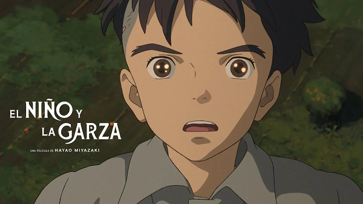
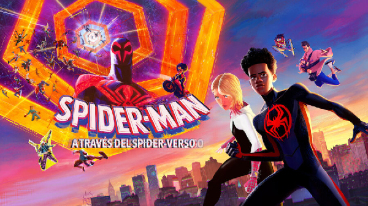
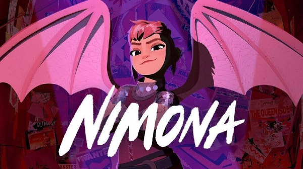
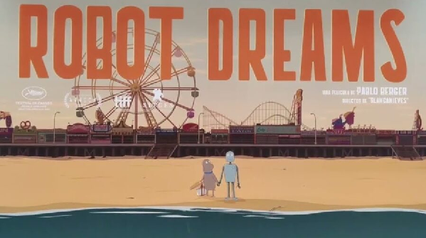
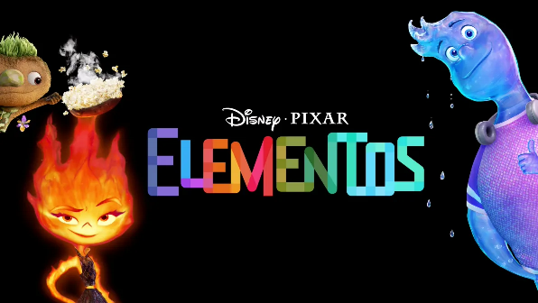

Un año donde Disney no figura y la opción de Pixar no es la dominante en la categoría del Óscar a Mejor
película animada.
Las 5 películas nominadas en los Óscar de este año son:
La pelea a muerte está entre el
fantástico despliegue de diseño y creatividad de Spider-Man: A través del Spider-Verso, contra el
imperio de la animación 2D de Miyazaki.
Referencias:
Cine Premiere | Óscar 2024: Mejor película animada, predicciones y análisis de nominadas
Premios Óscar 2024 | Elaborado x Camila de Jesús Tzab Cetina